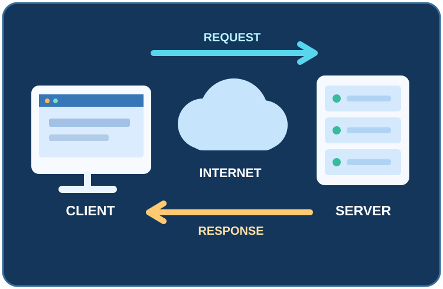

Client
A browser, app, or other program that requests a resource or service.
IT 3203 • WEB DEVELOPMENT PROJECT
Every webpage begins with a conversation: a client asks for information, and a server responds. Explore the technologies that make that exchange possible.
Explore How It Works →
Overview
Client-server architecture divides computing tasks between clients, which request services, and servers, which provide them. Web browsers are common clients. Web servers deliver websites, applications, and information in response to those requests. This research project explains the request-response process, common technologies, system designs, security concerns, and modern uses.
Key Terms
A browser, app, or other program that requests a resource or service.
Software or a system that receives requests and supplies resources or services.
Web communication protocols used to exchange requests and responses; HTTPS protects traffic using TLS.
Table of Contents
Choose a section below to continue reading.
Understanding client-server systems is useful for web development, networking, system administration, and cybersecurity. The same underlying model supports activities like online banking, video streaming, and cloud applications.